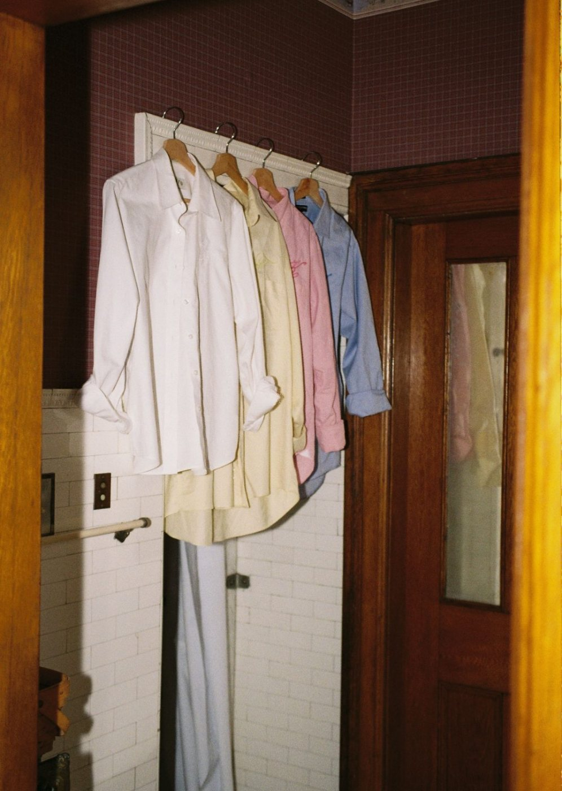

오시는 길
개킴세탁소는 묵내시장 정문에서 동쪽으로 40 m 떨어진 시장길 27, 1층에 있습니다.
영업 시간
- 월~금07:30~21:00
- 토09:00~18:00
- 일요일·공휴일휴무
- 그날 접수 마감14:00
- 찾는 시각15:00부터
10월 휴무일(일요일 빼고)
- 10월 3일(토)개천절
- 10월 5일(월)개천절 대체 휴일
- 10월 9일(금)한글날
찾아오는 길
개킴세탁소는 묵내동 시장길 27, 1층에 있다. 묵내시장 정문에서 시장길을 따라 동쪽으로 40 m 걸으면 길 북쪽 첫 건물이다.
- 묵내03 마을버스묵내시장 앞 · 12분 간격, 06:20~22:40걸어서 1분
- 271 시내버스묵내동 주민센터 · 9분 간격, 05:30~23:50걸어서 5분
주차 — 묵내시장 공영주차장(정문 옆), 접수증을 보여 주면 30분 무료
사진 출처
사진은 모두 Pinterest에서 분위기를 맞춰 고른 참고 사진이고 개킴세탁소를 찍은 것이 아니다. 라이선스를 확인하지 못했으므로 요청이 오면 바꾼다.
- 나무 봉에 걸린 리넨 셔츠 세 벌 · Pinterest 핀
- 비닐을 씌워 봉에 건 셔츠 · Pinterest 핀
- 비닐 씌운 옷이 걸린 컨베이어 행거 · Pinterest 핀
- 소매를 걷은 리넨 셔츠 네 벌 · Pinterest 핀
- 걷어 올린 셔츠 소매 · Pinterest 핀
- 빨랫줄에 널린 옷 · Pinterest 핀
- 문 옆 고리에 걸린 셔츠 · Pinterest 핀
- 재봉틀 바늘 아래 천을 미는 손 · Pinterest 핀
- 공업용 재봉틀에서 박음질하는 손 · Pinterest 핀
- 니트 깃에 테이프를 박는 손 · Pinterest 핀
